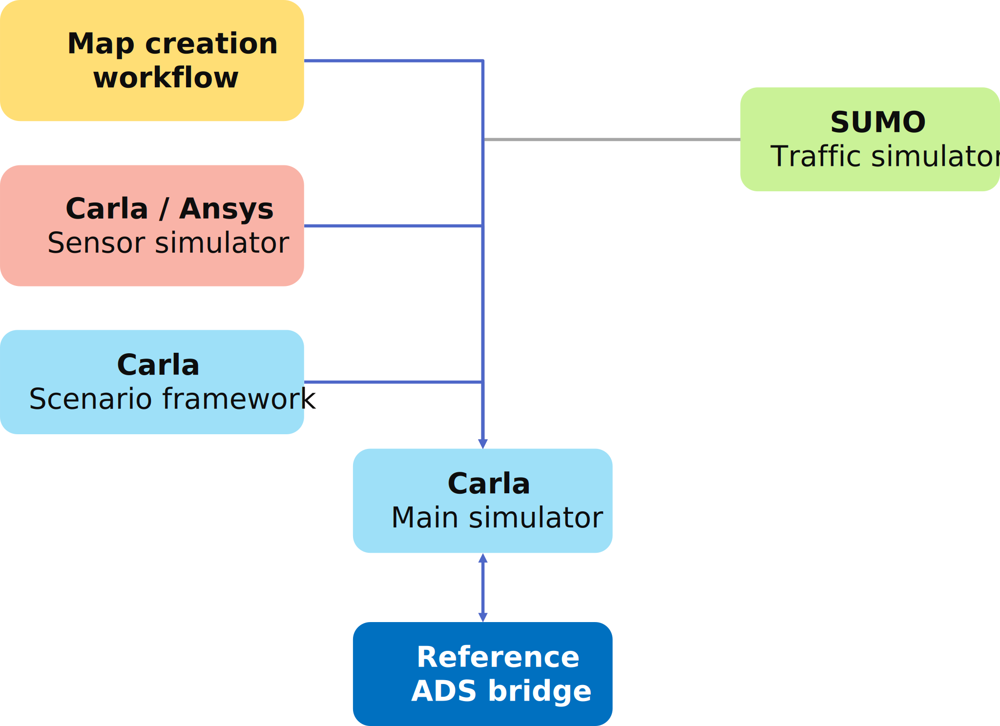
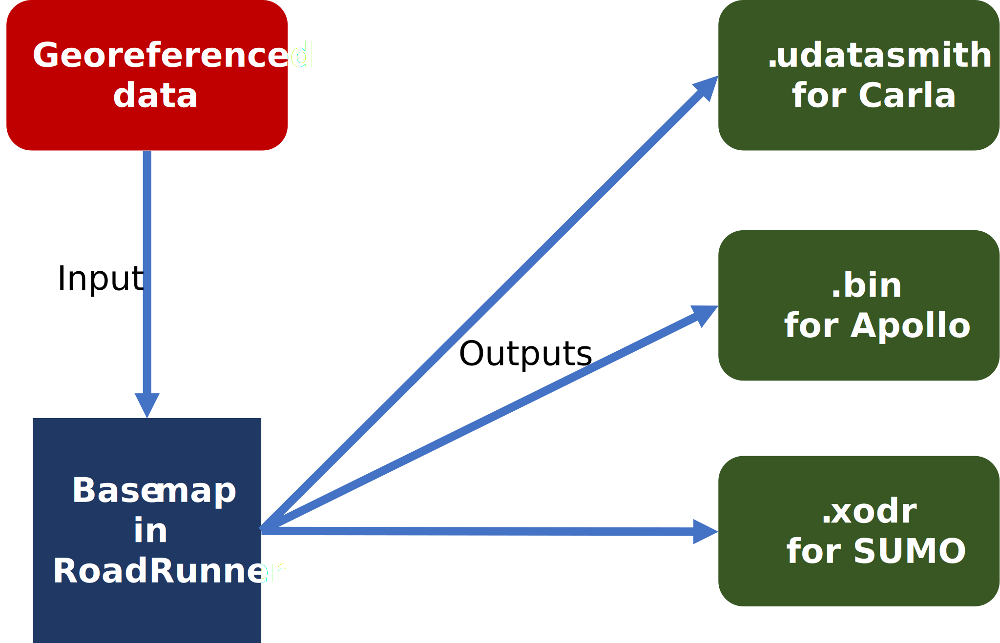

CoSIM Documentation
This website contains comprehensive documentation for the CoSIM framework.
 A screenshot from Carla running as part of the CoSIM framework
A screenshot from Carla running as part of the CoSIM framework
Introduction
CoSIM stands for CETRAN open-source SIMulation framework. The framework is modular with different tools performing distinct tasks and the framework is able to achieve full system-level software-in-the-loop simulation testing of an autonomous vehicle (AV).
The co-simulation architecture incorporates the following elements:
- A highly customizable and modular simulation and scenario framework built on top of the open-source Carla simulator.
- A reference traffic simulation implementation using the open-source SUMO microscopic traffic simulator co-simulated with Carla.
- A reference implementation of high-fidelity sensor co-simulation from Ansys AVXcelerate. A valid AVXcelerate license is required to use this functionality.
- A reference ADS bridge to Baidu Apollo from the Carla simulation framework. The bridge is highly parallelized with multiprocessing-based Carla clients and communicates over a custom low overhead TCP messaging protocol developed by CETRAN.
- A map creation workflow with Mathworks RoadRunner to build accurate maps for each of the tools in the simulation toolchain.
- And finally, various custom-developed tools and scripts used to facilitate interconnection between disparate aspects of the simulation framework.
This simulation framework and its reference implementation, as described here, consist of open-source tools and components. However, the same general architecture can be used and supplanted with any commercial or custom/proprietary tools as needed.
The framework is able to output sensor data and incorporate realistic and randomized road traffic and pedestrian interactions along with the capability to script complex scenarios which can be used to challenge the various subsystems of an AV.
Project layout
mkdocs.yml # The configuration file.
docs/
index.md # The documentation homepage.
... # Other markdown pages, images and other files.
src/
ads/
ApolloBridgeServer.py # The main server-side script for the Apollo bridge. Run inside Apollo Docker.
cyberReader.py # Module to read control commands from Apollo CyberRT.
cyberWriter.py # Module to write simulation messages into Apollo CyberRT.
sim/
main.py # The main script for the CoSIM simulation framework.
ApolloBridgeClient.py # The main client-side classes for the Apollo bridge.
ApolloBridgeClient_Parser.py # Methods to encode and decode ProtoBuf messages as required by Apollo.
To get started, take a look at the general architecture of the CoSIM framework in the next section.
Getting started ↵
CoSIM Architecture
A high level architecture of the CoSIM framework is illustrated below.

Manager
an example layout
Third Party Software
Map creation workflow
This section describes the workflow for creating maps compliant with the CoSIM framework and its reference bridge to the Baidu Apollo ADS.
MathWorks RoadRunner can be used for modelling and exporting the map in various formats for the CoSIM framework. RoadRunner is a versatile and easy-to-use 3D road and environment modelling tool with powerful functionalities to import and export multiple different file formats focused on vehicle and autonomous driving testing.
RoadRunner is widely used by both industry and academia. Roads and associated infrastructure can be placed in a 3D space with relative ease using a straightforward GUI. Various aspects of the road network such as textures, lane markings, lane widths and so on can be customized as per requirements.

Formats required
Once the base map is generated on RoadRunner, it is exported to different formats as per the requirements of the individual tools in the simulation toolchain. These are as follows:
- Carla - As per the latest verion of Carla, RoadRunner exports have to be fulfilled in the Unreal Editor Datasmith format along with an OpenDRIVE file. Datasmith serves as a robust file format and workflow toolkit designed to streamline the integration of 3D data from various design and modeling applications into Unreal Engine. It intelligently converts lights and materials, preserving metadata, hierarchy, and enabling automatic updates for iterative design processes. The format facilitates photorealistic visualization within Unreal Engine, making it easy to quickly generate and update road models from RoadRunner.
- Apollo - Apollo requires the map in a specific ProtoBuf HD map format with semantic information about road features such as individual lanes. RoadRunner supports Apollo export in both plaintext and binary formats.
- SUMO - SUMO, if used for traffic simulation, requires the OpenDRIVE file to generate its own map network. Once the file is imported into SUMO, it must be post-processed to enable left-hand driving, as SUMO in its default configuration only supports right-hand driving.
Base map
For generating a map based on real-world locations, the first step of the workflow is to import ground-truth geospatial data. This could be in the form of GIS vector data, pointclouds or even accurately scaled drawings or map images.
For example, we can use the Singapore Land Traffic Authority's (LTA) publicly available kerbline dataset as the ground-truth data. The kerbline data is available freely as a ShapeFile (SHP) for the entire island of Singapore on the Land Transport DataMall. Using a free GIS software such as QGIS, we can isolate the area required for the simulation map before exporting the SHP file to GPS Exchange (GPX) format or GeoJSON format which can be imported into the RoadRunner workspace.
Export
The RoadRunner map, once modelled, can be exported to various formats as is required for the simulation test framework.
Ended: Getting started
CoSIM framework ↵
Bridge Client
Here we list the identifier of the functions/class we commented
src.sim.ApolloBridgeClient.ApolloBridgeClient_ActorGTPublisher(hostIP, hostPort)
Bases: BridgeClient
Generic Bridge Client
Parameters:
-
hostIP(string) –The IP of the ads host (server)
-
hostPort(int) –The port of the ads host (server)
src.sim.ApolloBridgeClient.ApolloBridgeClient_ActorGTPublisher.sendActorGroundTruth(dataList)
Args:
Returns:
src.sim.ApolloBridgeClient.ApolloBridgeClient_ActorGTPublisher.sendSensorData(data, type)
Args:
Returns:
src.sim.ApolloBridgeClient.ApolloBridgeClient_EgoPublisher(hostIP, hostPort)
Bases: BridgeClient
Generic Bridge Client
Parameters:
-
hostIP(string) –The IP of the ads host (server)
-
hostPort(int) –The port of the ads host (server)
src.sim.ApolloBridgeClient.ApolloBridgeClient_EgoPublisher.sendEgoData(dataList)
Args:
Returns:
src.sim.ApolloBridgeClient.ApolloBridgeClient_ImgPublisher(hostIP, hostPort)
Bases: BridgeClient
Generic Bridge Client
Parameters:
-
hostIP(string) –The IP of the ads host (server)
-
hostPort(int) –The port of the ads host (server)
src.sim.ApolloBridgeClient.ApolloBridgeClient_ImgPublisher.sendImgData(imgData)
Args:
Returns:
src.sim.ApolloBridgeClient.ApolloBridgeClient_ImgPublisher.sendcImgData(cimgData)
Args:
Returns:
src.sim.ApolloBridgeClient.ApolloBridgeClient_PCPublisher(hostIP, hostPort)
Bases: BridgeClient
Generic Bridge Client
Parameters:
-
hostIP(string) –The IP of the ads host (server)
-
hostPort(int) –The port of the ads host (server)
src.sim.ApolloBridgeClient.ApolloBridgeClient_PCPublisher.sendPCData(PCData)
Args:
Returns:
src.sim.ApolloBridgeClient.ApolloBridgeClient_Subscriber(hostIP, hostPort)
Bases: BridgeClient
Generic Bridge Client
Parameters:
-
hostIP(string) –The IP of the ads host (server)
-
hostPort(int) –The port of the ads host (server)
src.sim.ApolloBridgeClient.BridgeClient(hostIP, hostPort, msgString, delay=None, nextMsgTime=None)
Generic Bridge Client
Parameters:
-
hostIP(string) –The IP of the ads host (server)
-
hostPort(int) –The port of the ads host (server)
-
msgString(bstring) –string ID of the client
-
delay(float, default:None) –time delay between each message
-
nextMsgTime(float, default:None) –store the expected timestamp of the next message
src.sim.ApolloBridgeClient.BridgeClient.closeConnection()
Close the connection to the server
src.sim.ApolloBridgeClient.BridgeClient.computeNextMsgTime(now, prevMsg, delay)
When a message is sent, determines the timestamp of the next message and wheter to skip frames in case of excessive accumulation
Parameters:
-
now(float) –current timestamp
-
prevMsg(float) –expected time of the previous msg
-
delay(float) –the expected delay of this message stream
Returns:
src.sim.ApolloBridgeClient.BridgeClient.connectToServer()
Initiate connection
src.sim.ApolloBridgeClient.BridgeClient.decodeSimData(binMsg)
Decodes and return the message received from the server, to be customized based on the client role.
src.sim.ApolloBridgeClient.BridgeClient.recvMsg()
Args:
Returns:
src.sim.ApolloBridgeClient.BridgeClient.recvSimData()
Function to receive messages from the server
Args:
Returns:
-
–
The message from the server, decoded with self.decodeSimData
src.sim.ApolloBridgeClient.BridgeClient.recvall(count)
Args:
Returns:
src.sim.ApolloBridgeClient.BridgeClient.register()
Register a client object to the server
Args:
Returns:
src.sim.ApolloBridgeClient.BridgeClient.sendBinMsg(data, msgType)
Netstruct protocol function to send packaged data as binary
Parameters:
-
data–
Returns:
src.sim.ApolloBridgeClient_Parser.currentTime = time.time()
module-attribute
The Carla and Apollo maps are generated from Mathworks RoadRunner. Carla coordinate system is the same as the exported map coordinates except with -y Apollo map has a very large offset which is mentioned below and is applied to the localization messages
src.sim.ApolloBridgeClient_Parser.ConvertPoints(p, t)
Args:
Returns:
src.sim.ApolloBridgeClient_Parser.encode_BPmsgs(lat, lon, utmx, utmy, t, seq)
Args:
Returns:
src.sim.ApolloBridgeClient_Parser.encode_Chamsgs(t, lat, lon, utmx, utmy, odo, heading, vel, throttle, brake, steering)
Args:
Returns:
src.sim.ApolloBridgeClient_Parser.encode_CompressedIMG(imgData, j)
Args:
Returns:
src.sim.ApolloBridgeClient_Parser.encode_GPSmsg(lat, lon, utmx, utmy, qw, qx, qy, qz, velx, vely, heading, t, seq)
Args:
Returns:
src.sim.ApolloBridgeClient_Parser.encode_Heamsgs(t, seq, heading)
Args:
Returns:
src.sim.ApolloBridgeClient_Parser.encode_IMG(imgData, j)
Args:
Returns:
src.sim.ApolloBridgeClient_Parser.encode_IMUmsgs(avelX, avelY, avelZ, accX, accY, accZ, t, seq)
Args:
Returns:
src.sim.ApolloBridgeClient_Parser.encode_INSmsgs(t, seq)
Args:
Returns:
src.sim.ApolloBridgeClient_Parser.encode_PC(sampleData, j)
Args:
Returns:
src.sim.ApolloBridgeClient_Parser.encode_POmsgs(objCount, objIDs, objType, objHeadings, objLats, objLons, objutmx, objutmy, objVelXs, objVelYs, objBBxs, objBBys, objBBzs, t, seq)
Args:
Returns:
src.sim.ApolloBridgeClient_Parser.encode_Posemsgs(lat, lon, utmx, utmy, qw, qx, qy, qz, velx, vely, heading, avelX, avelY, avelZ, accX, accY, accZ, t, seq)
Args:
Returns:
src.sim.ApolloBridgeClient_Parser.encode_Tfmsgs(utmx, utmy, eulx, euly, eulz, t, seq)
Args:
Returns:
src.sim.ApolloBridgeClient_Parser.encode_corrIMUmsgs(avelX, avelY, avelZ, eulX, eulY, eulZ, accX, accY, accZ, heading, t)
Args:
Returns:
Bridge Server
Here we list the identifier of the functions/class we commented
src.ads.ApolloBridgeServer.Server(host, port)
Main bridge server class file with host and port definitions
Parameters:
-
host(string) – -
port(int) –
src.ads.ApolloBridgeServer.Server.start()
Start the server
src.ads.ApolloBridgeServer.ccHandler(server, conn, addr, prID)
Handler for Control Command messages Args: conn : addr : prID :
src.ads.ApolloBridgeServer.connHandler(server, conn, addr, prID, initmsgType)
Connection handler. Two will be created for each session as a publisher and subscriber (on server side)
Parameters:
-
conn– -
addr– -
prID– -
initmsgType–
Scenario framework
This section describes the scenario framework included as part of CoSIM. The scenario framework is a slightly more abstract layer on top of Carla's Python API used for manual scenario scripting.